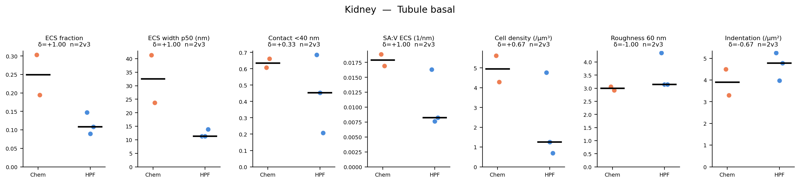

At a glance
Eleven headline metrics for the crops the filters above leave in, chemical over rapid HPF, with Cliff's δ for each — the chance a chemical crop reads higher than an HPF one, minus the chance it reads lower. Click any card to open that metric in the plot below. Every number here is computed in the page from the same CSV the table reads.
One metric, live
Loading…
The standing panels for this family
Pre-rendered by the pipeline, one for each resolution. The matched panel exists to be read against the native one: a difference that survives downsampling to 8 nm is not explained by voxel size. These change with the family above.
Volume fraction
ECS and cell volume fractions per crop. The most resolution-robust family, so the native panel can be read fairly directly. Native only: the matched run reads zarr metadata that is valid at native resolution alone.
Draw this live — any metric in the family, any grouping, one dot per crop.

ECS width
Distance from each extracellular voxel to the nearest cell. Distance to the wall, not channel width — roughly a quarter of it.
Draw this live — any metric in the family, any grouping, one dot per crop.


Cell-to-cell gap
Gap between neighbouring cells. Hard floor of three voxels, so the left tail is the measurement, not the tissue; at 8 nm that floor is 24 nm.
Draw this live — any metric in the family, any grouping, one dot per crop.


Surface area to volume
ECS-facing membrane per unit cell volume, pooled across the cells in each crop.
Draw this live — any metric in the family, any grouping, one dot per crop.


Membrane shape
Curvature, roughness and protrusion density on the ECS-facing membrane. The 30 nm roughness scale is not honestly resolvable in the matched panel.
Draw this live — any metric in the family, any grouping, one dot per crop.


Table view
The same crops as the plot above, for the metric you have selected. Click a heading to sort; the ▾ on a column filters it; a crop name opens it in the viewer.
Every metric at once


One region, every metric





Pictures of the geometry
These are stills. Paired 3D views puts one crop of each preparation side by side per region, and the crop page will load any two of the 55 into a viewer you can turn.